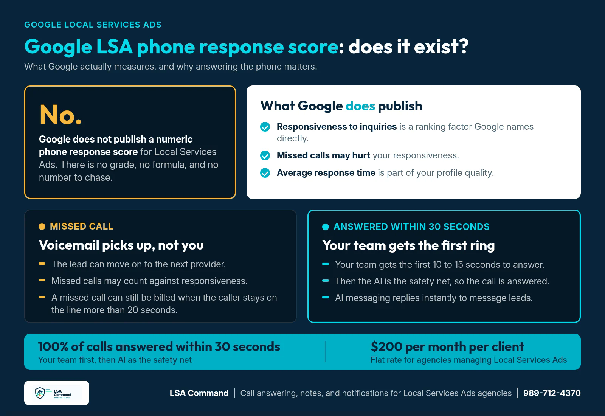
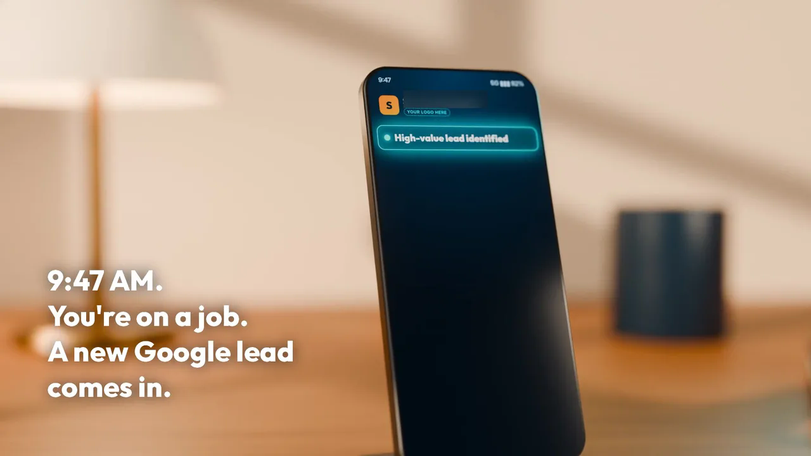
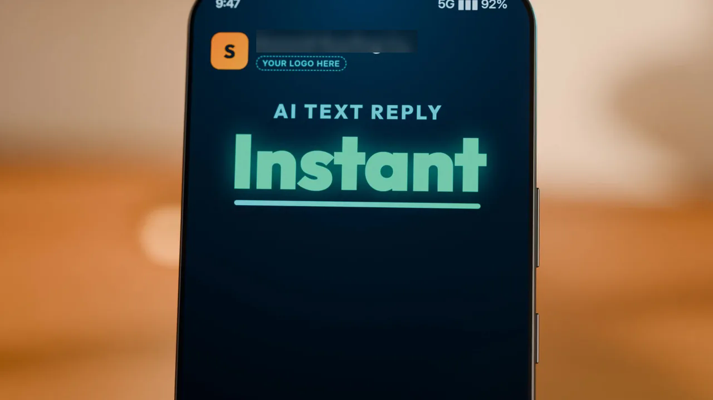
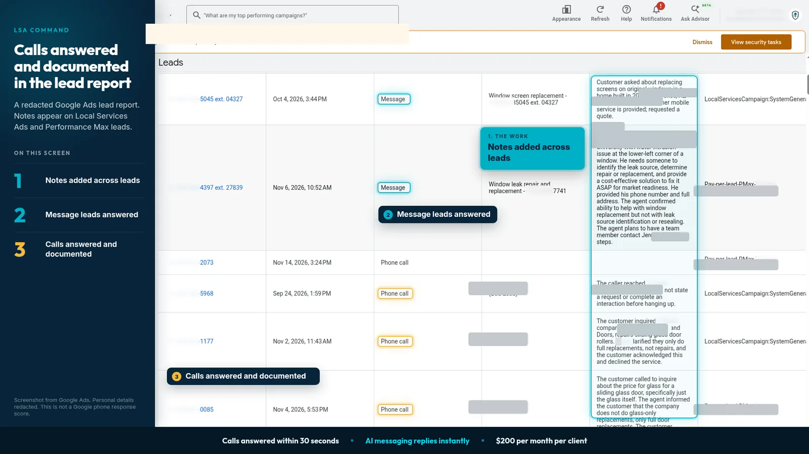

A contractor is out on a job when a new Google Local Services Ads lead calls, and nobody is free to pick up. With LSA Command, that call still gets a response: the client's team gets the first 10 to 15 seconds, then the call transfers to AI, so 100% of calls are answered within 30 seconds, and AI messaging replies instantly.
That moment is also why agency owners and account managers search for a Google LSA phone response score. The short version: Google does not publish one. It does describe two signals tied to how you respond to leads, and both are worth knowing. Watch the 36-second film first, then read what Google actually says.

- 0:00 A new Google LSA lead comes in
- 0:07 High-value lead identified, and notifications sent
- 0:15 The call is transcribed and summarized
- 0:18 An AI text reply goes out instantly
- 0:22 The lead is booked
- 0:25 No lead left waiting
- 0:28 Calls answered within 30 seconds
- 0:31 lsacommand.com and 989-712-4370
What the film shows in 36 seconds
The film is a short story, not a feature tour. It follows one lead from the first ring to a booked job:

- A contractor is out on a job. A new Google LSA lead comes in.
- The lead is flagged "High-value lead identified." Text and email notifications go out with the lead details.
- The call is transcribed and summarized into notes.
- An AI text reply is sent instantly.
- The lead confirms a time and is marked Booked.
- The recap reads "No lead left waiting," with four lines on screen: calls answered within 30 seconds, text replies instant, lead notes saved, and text and email notifications sent.
The contractor never puts down the tools. The lead never sits in voicemail. That is the whole story, and it is the answer to the question most people are really asking when they search for a phone score.
Is there a Google LSA phone response score?
No. Google does not publish a numeric phone response score for Local Services Ads. There is no official percentage, formula, grade, or cutoff in Google's help pages, and you will not find a "phone score" field to report to a client.
People search the phrase anyway, usually after a client's lead volume dips or a rep mentions responsiveness. What they are asking about maps to two things Google does describe:
- Responsiveness, which Google lists as a factor in ad rankings and ties directly to missed calls.
- Response time, which Google lists as part of profile quality and recommends keeping consistently fast.
Neither one comes with a published number. Anyone quoting you a specific score or threshold is guessing. What you can do is read Google's exact wording and manage the behavior it describes.
What Google actually says about responsiveness
In "About ad rankings"
Google's ad rankings page says listings are ranked by an auction that takes into account your bid and your overall profile quality. One of the factors in how likely an ad is to result in a lead is, in Google's words:
"Your responsiveness to customer inquiries and requests: Missed calls may negatively affect your responsiveness."
The same page says profile quality includes "your rating, number of reviews, average response time," along with images, verification checks, and other business information. It adds: "Higher quality profiles, including those with images, may rank higher and may also pay lower costs per lead."
Note the word "may." Google does not say a missed call will drop your rank, and it does not say how many missed calls matter.
In "Manage leads and jobs"
Google's lead management page is just as direct: "It's highly recommended that you respond to leads as soon as they come in. Having a consistently fast response time could improve your ad's ranking on search and increase your ability to receive leads."
Again, "could improve," not "will improve." It is a recommendation with a possible upside, not a formula.
The one estimate Google does show is for messages
Part of the confusion comes from message leads. Google describes messaging responsiveness estimates that may appear on ads after 2 or more message leads in the last 90 days, ranging from "a few minutes" to "one day." That estimate is about message leads. Google does not describe an equivalent estimate for phone calls. If message leads are part of your clients' mix, see how LSA message leads get an instant reply.
A missed call versus a call answered within 30 seconds
With no published score, the practical comparison is between two outcomes for the same ring.
| Missed or unanswered call | Call answered within 30 seconds | |
|---|---|---|
| What the caller gets | Voicemail. The caller may hang up and try the next listing. | A response while they are still on the line. |
| Responsiveness | Google says "Missed calls may negatively affect your responsiveness." | The call is picked up instead of ringing out. |
| Billing | May be billed as a lead under the 20-second rule. | If the lead is billed, there is a real conversation behind it. |
| Record | A phone number, and maybe a voicemail. | Transcript, AI summary, and notes on the lead. Text and email notifications sent. |
| Next step | Someone has to call back later. | The lead can be booked or handed to the team. |

A quick word on the billing row. Google lists a missed call during business hours as a valid lead when the customer stays on the line for more than 20 seconds (Google's source). ServiceTitan reported that in its data, 65.9% of abandoned LSA calls lasted at least 20 seconds. The full breakdown is in our post on LSA missed call charges.
Missed calls are also common. Invoca found that 27% of calls to home services businesses go unanswered. To put a dollar figure on one client's account, run the LSA missed call calculator.
How the 30-second answer works
The film compresses the handoff into a few seconds of screen time. Here is what happens underneath:

- The client's team gets the first 10 to 15 seconds. The call rings through to them as usual. If they pick up, nothing else happens.
- If nobody has picked up, the call transfers to the voice AI. The caller gets an answer inside 30 seconds instead of a voicemail greeting.
- Message leads get an AI reply instantly. No queue, no waiting for someone to check the inbox.

The result is 100% of calls answered within 30 seconds, without asking a crew to stop work every time the phone rings. Details are on the LSA AI call answering page.
One thing we will not tell you: that answering faster will raise a client's rank. Google says a consistently fast response time "could improve" ranking, and that is as far as anyone can honestly go. What fast answering does for certain is put a response in front of the caller before they move on.
Notes and notifications: the record behind every call
Answering the call is half of it. The other half is making sure the client's team knows what happened and the account shows the work.
Notifications are instant, agency-branded text and email, and they include the caller's address and callback number. A typical one might read: new lead for Sample Plumbing, 123 Example Street, callback 555-0142, water heater leaking, wants a visit tomorrow morning. There is more on what goes into them in our post on LSA lead notifications.
Notes are written onto the lead, with a transcript and an AI summary, so whoever opens the lead later sees the conversation instead of a bare phone number. High-value leads identified along the way are flagged with the reason, which is the moment at 0:07 in the film. The notes and notifications page covers both.


Want to see this on one of your own client accounts? Book a 30-min discovery call, or call or text 989-712-4370.
Since Google gives you no phone score to show a client, a documented lead list is the closest thing you have to proof of responsiveness. It shows which calls were answered, what was said, and what happened next.
What an agency can do this week
- Stop hunting for the number. It is not in the dashboard, because Google does not publish it. Our Google LSA dashboard guide covers what is there.
- Count missed calls per client. Go through each account's lead list and note which calls went unanswered and when. Lunch hours, job sites, and end of day are the usual gaps.
- Price the gap. Use the missed call calculator so the conversation with the client is about dollars, not a hypothetical score.
- Put a ceiling on answer time. Let the client's team keep the first 10 to 15 seconds, and make sure something answers after that.
- Document every lead. Notes with a transcript and summary make monthly reporting faster and make lead quality conversations much easier.
- Treat responsiveness as one factor. Reviews, bid, and verification matter too. See how to rank higher in Google Local Services Ads for the wider picture.
Beyond the film
A 36-second story can only show one lead. For a longer look at what happens to Local Services Ads calls that go unanswered, watch the 9-minute companion video in Local Service Ads lead calls nobody answers.
LSA Command is white label for agencies, so notifications carry your brand, not ours. It costs $200 per month per client, and voice AI is included, not an add-on. Setup usually takes one call. See pricing for the details, or the agencies page for how the white label setup works across a client roster.
Frequently asked questions
- Is there a Google LSA phone response score?
- No. Google does not publish a numeric phone response score for Local Services Ads. There is no official percentage, formula, or cutoff in its help pages. What Google does describe is responsiveness, where it says missed calls may have a negative effect, and average response time, which it lists as part of profile quality.
- Do missed calls hurt Local Services Ads ranking?
- Google's ad rankings page lists responsiveness as a factor and says, "Missed calls may negatively affect your responsiveness." The key word is "may." Google does not say a missed call will lower your rank, and it does not say how many missed calls matter.
- Will answering calls faster improve my LSA ranking?
- Google says, "Having a consistently fast response time could improve your ad's ranking on search and increase your ability to receive leads." That is "could," not "will." Nobody can honestly promise a ranking change. What faster answering reliably does is give the caller a response before they hang up and call the next listing.
- Where can I see my phone response score in the LSA dashboard?
- You cannot, because Google does not publish one. The practical substitute is your own lead list: which calls were answered, which were missed, and what happened after each one. Notes written onto each lead make that record easy to review and share with a client.
- Is the response time shown on some LSA ads a phone score?
- No. Google describes messaging responsiveness estimates that may appear on ads after 2 or more message leads in the last 90 days, ranging from "a few minutes" to "one day." Those estimates are about message leads. Google does not describe an equivalent estimate for phone calls.
- Does Google charge for missed LSA calls?
- It can. Google lists a missed call during business hours as a valid lead when the customer stays on the line for more than 20 seconds. The full explanation is in our post on LSA missed call charges.
- How does LSA Command answer every call within 30 seconds?
- The client's team gets the first 10 to 15 seconds to pick up. If nobody has answered, the call transfers to the voice AI, so 100% of calls are answered within 30 seconds. Message leads get an AI reply instantly. The call is transcribed, summarized into notes on the lead, and the team receives text and email notifications.
No lead left waiting on your clients' accounts
See how 100% of calls answered within 30 seconds, instant AI messaging, and notes on every lead would work across your client roster. It is $200 per month per client with voice AI included, and setup usually takes one call. Book a 30-min discovery call, or call or text 989-712-4370.